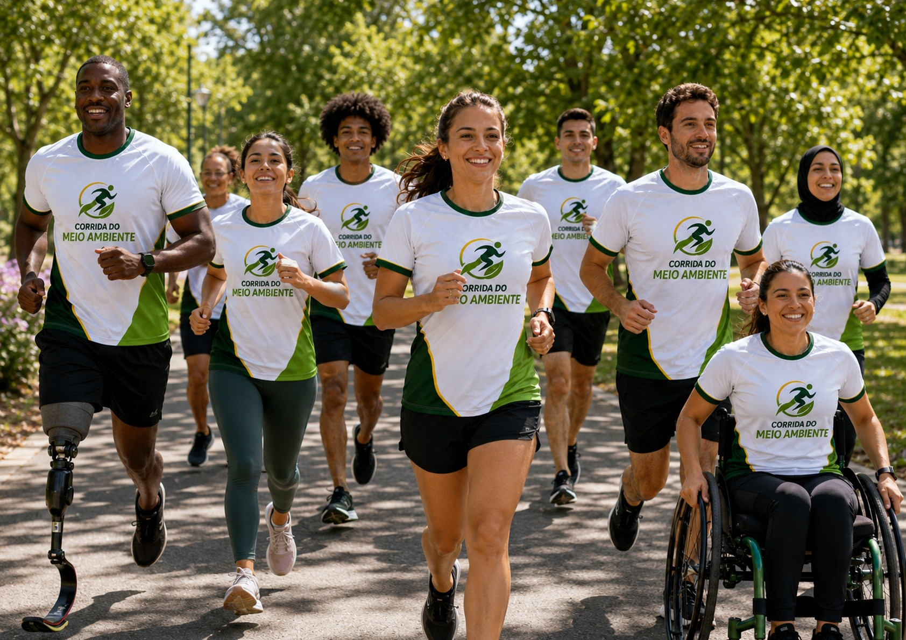
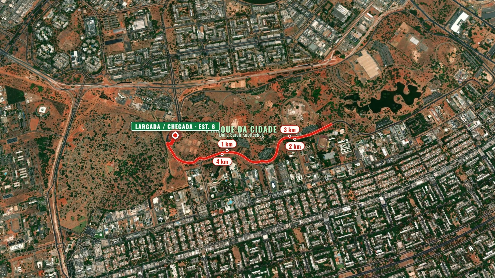
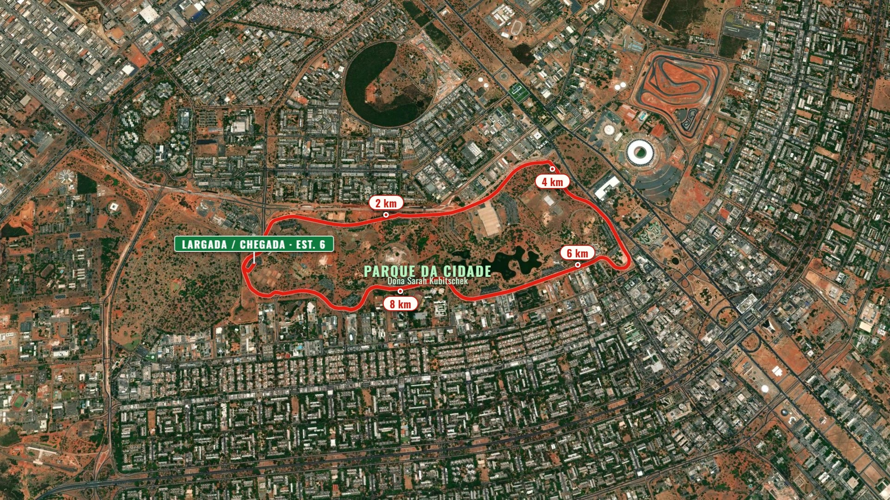

Esporte, sustentabilidade, inclusão e consciência ambiental em uma experiência que mobiliza a comunidade.

O esporte como ponto de encontro entre saúde, cidadania e responsabilidade ambiental. Um evento esportivo, educativo, ambiental, social e comunitário que integra corrida e caminhada, educação ambiental, coleta seletiva, redução de resíduos e participação inclusiva.
"Cuidar do meio ambiente começa com atitudes possíveis, acessíveis e diárias."
Um projeto com objetivos claros e participação ampla.
Promover a consciência ambiental e a participação comunitária por meio da corrida, integrando esporte, lazer, educação ambiental, coleta seletiva, redução de resíduos e preservação dos espaços públicos.
A proposta foi pensada para acolher diferentes perfis e níveis de preparo físico.
Largada e chegada no Estacionamento 6. Cada corredor escolhe a sua distância — do circuito de 5 km ao grande percurso de 10 km que contorna todo o parque. Veja os percursos em vídeo aéreo.

O circuito ideal para quem quer um bom desafio

O desafio dos mais preparados
Vista aérea dos percursos · toque em um percurso para ver o vídeo
Da mobilização inicial à prestação de contas.
Planejamento, contratações, percurso, acessibilidade, comunicação e inscrições.
Entrega dos kits, conferência de inscrições, orientações e preparação da estrutura.
Corrida, caminhada, percurso acessível, ecopontos, apoio e ações educativas.
Desmontagem, limpeza, destinação de resíduos, relatório e prestação de contas.
Percurso completo conforme regulamento.
Ritmo leve para iniciantes, idosos e grupos.
Trajeto adaptado e apoio adequado.
Acolhimento, ecopontos e orientação ambiental.
Largada, chegada e atividades de convivência.
A sustentabilidade está presente em todas as fases do projeto.
Missões educativas tornam a participação dinâmica, prática e mensurável.
Pontos estratégicos, sinalização clara e incentivo à separação correta dos resíduos.
Uso consciente de materiais, incentivo a garrafas reutilizáveis e comunicação digital.
Mensagens simples, visuais e diretas para todos os públicos.
Cada missão cumprida aproxima o participante de uma atitude sustentável.
Participar não depende exclusivamente de completar o percurso.
Percurso acessível, circulação adequada, áreas de apoio e banheiros acessíveis quando previstos.
Orientações claras, sinalização objetiva e comunicação visual simples.
Equipe orientada para acolher e direcionar participantes com necessidades específicas.
Participação ampla, democrática e acolhedora, inclusive para públicos em vulnerabilidade.
Indicadores objetivos para demonstrar alcance, impacto e transparência.
Os recursos serão aplicados de forma compatível com as ações previstas e as exigências do órgão concedente. Coordenação, produção, logística, sinalização, hidratação, acessibilidade, segurança, coleta seletiva e registro audiovisual integrados em uma única operação.
Aplicação em planejamento, equipe, comunicação, estrutura, kits, hidratação, segurança, acessibilidade, coleta seletiva, educação ambiental, monitoramento e prestação de contas.